Running RECURSIVE–MATRIX–CHAIN is asymptotically more efficient than enumerating all the ways of parenthesizing the product and computing the number of multiplications for each.
The running time complexity of enumerating all the ways of parenthesizing the product is n*P(n) while in case of RECURSIVE-MATRIX-CHAIN, all the internal nodes are run on all the internal nodes of the tree and it will also create overhead
We know that the running time for enumeration is .
Now we will show that the running time for RECURSIVE–MATRIX–CHAIN is .
To find an upper bound on the running time of RECURSIVE-MATRIX-CHAIN, derive a recurrence of the form 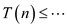 and solve it by substitution.
To get the upper-bound recurrence, we will assume the lines 1–2 and 6–7 each take at most constant time 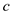. Thus, we have the recurrence:
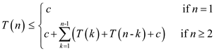
For 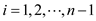, each term 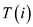appears once as and once as 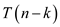, and collecting the 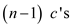 in the summation together with the out front, we can rewrite the recurrence as
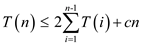
We will now prove that using substitution method.
(NOTE: Any upper bound of that is will suffice. It is preferred to prove).
Specifically, we shall show that for all 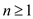. The basis is easy, since 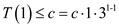.
Using inductive procedure, for 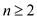 we have
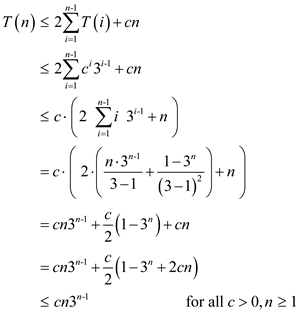
The RECURSIVE–MATRIX–CHAIN takes time, and enumerating all parenthesizing takes time.
Hence, RECURSIVE–MATRIX–CHAIN is more efficient than enumeration.
Note:
The substitution uses
The equation can be derived from the equation of the exponential series
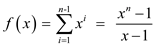
Let . By taking derivative, we get
The matrix-chain multiplication problem exhibit optimal substructure
If an optimal solution to a problem is obtained by the optimal solutions of its sub-problems, then the problem is said to be exhibits optimal sub structure.
Maximizing the number of scalar multiplications in the matrix-chain multiplication problem is also exhibits optimal sub structure.
• Consider a chain of matrices to multiply. Then this chain of matrices can be parenthesized so that the product cost is the maximum.
• To optimally parenthesize this product, the chain must be split between Ak and Ak+1 for some k in the range i ≤ k < j. since the cost to calculate is equals to the cost to calculate plus the cost to calculate
• Since the goal is to maximize the number of scalar multiplications, the sub chains and must be parenthesized optimally. That is , the problem split into two sub problems( and ) and the parenthesizing of these sub chains must be optimal.
• Consider that the sub problems produce the optimal solutions. Assume, if the solution to is not maximum cost, then there is another way to maximize the chain, then there is another way to parenthesis such that the cost to multiply the main chain more than the optimum. This is a contradiction.
• Therefore the solutions to the sub problems give the optimal solution to the whole problem.
Hence, maximizing the number of scalar multiplications problem exhibits optimal sub-structure.
Since the given problem exhibits optimal substructure, it can be solved by the following dynamic programming algorithm:
MATRIX-CHAIN-ORDER (p)
1 n = p.length- 1
2 let m[1..n,1..n] and s[1..n-1,1..n] be new tables
3 for i = 1 to n
4 m[i, i]=0
5 for l = 2 to n // l is the chain length
6 for i = 1 to n-l+1
7 j = i + l-1
8 m[i, j]=-1
9 for k = i to j-1
10 q = m[i,k]+ m[k+1, j]+pi-1pkpj
11 if q > m[i,j]
12 m[i, j]=q
13 s[i, j]=k
14 return m and s
Optimal Solution
Consider the following sizes of the matrices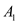, 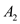, 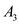, and respectively
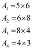
So,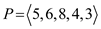 here 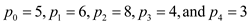
From the dynamic programming technique,
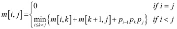
Therefore,
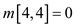
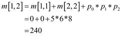
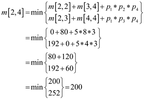
From the dynamic programming technique,
The optimal solution is 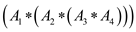
From the Professor Capulet’s equation,
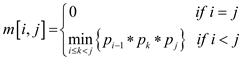
Therefore,
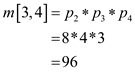
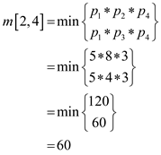
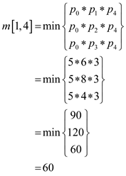
From the Professor Capulet’s technique,
The optimal solution is 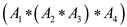
Thus, the solution calculated using the Professor Capulet’s technique and the solution calculated using the dynamic programming is not identical.
Therefore the solution calculated using the Professor Capulet’s technique is not optimal.
Hence, the above problem is an instance of matrix chain multiplication problem. This problem yields a suboptimal solution when greedy technique is used.
The rod cutting problem:
The rod cutting problem is violates the optimal substructure property if there is a limit on number of pieces of length i for 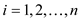
Optimal substructure is a property which says that optimal solutions to a problem gives optimal solutions to related sub problems, which can be solved independently.
If the number of pieces of a particular length that can be cut is limited, then the optimal -substructure property will be violated and dynamic programming approach would not apply. This is because, if the numbers of rods that can be cut of a particular length are limited, then the sub-problem which will involve two identical cuts would not have an optimal solution.
Hence the parent problem to that sub problem in the optimal sub problem could not have an optimal solution. So the optimal substructure property would be violated.
Example:
If we take a rod of length 4, price distribution is as given below in the table:
|
Length |
1 |
2 |
3 |
4 |
|
Price |
2 |
5 |
5 |
4 |
Consider that at max user can have 1 cut of length 2.
The optimal solution to this problem would depend on the optimal problem of the sub problems.
So the optimal solution would be to cut the rod in 2+2 lengths using the optimal substructure property giving revenue of 10. But due to the restriction, the solution would be 2+1+1 revenue of 9, which is wrong.
Hence in case of restriction on the length li of the number of pieces, the optimal substructure property is not applicable in the rod cutting problem.
Currency conversion:
Consider the following:
Currency 1 = U.S Dollar, r12=65, r13=100
Currency 2= Indian rupee, r21=1/65, r23=2
Currency 3= Japanese Yen, r31=0.01, r32=1/2
That is, 1 U.S dollar buys 65 Indian rupees, 1 Indian rupee buys 2 Japanese yen, and 1 Japanese yen byes 0.01 U.S dollars.
The conversion form Indian rupees to U.S dollars are as follows:
• Direct conversion:
For 65 rupees one can get only 1U.S dollar.
• Making conversion in a series (rupees -> Yens->dollars):
For 65 Indian rupees one can get 130 Japanese Yens .
For 130 Japanese Yens one can get 1.3 dollars
Instead of one trade, a series of 2 trades makes profit of 33.3%.
Currency conversion problem:
• Consider that there are n currencies numbered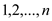.
• In the trade of currency exchange one can trade n
currencies numbered where he
can start from 1 and ends up with  currency.
currency.
• If for each currency pair i and j the exchange rate is , then with d units of the currency i can be converted into units of currency j.
•  is the
commission that is charged on making k trades in a
sequence.
is the
commission that is charged on making k trades in a
sequence.
• Since the sequence of trades may entail a commission, a best sequence of trades that produces more commission can be obtained.
Case 1:
Consider=0 for all
k =1, 2, 3.., n. That is, there is no need to pay
commission for making any number of trades. Then the finding best
sequence of trade problem exhibits optimal sub structure.
Consider the rates between any two currencies:
|
1 |
2 |
. |
. |
. |
n |
|
|
1 |
0 |
r 12 |
. |
. |
. |
r 1n |
|
2 |
r 21 |
0 |
r 2n |
|||
|
. |
. |
. |
. |
. |
. |
. |
|
. |
. |
. |
. |
. |
. |
. |
|
. |
. |
. |
. |
. |
. |
. |
|
n |
r n1 |
r n2 |
. |
. |
. |
0 |
And ck = 0 for making any number of trades.
Consider the starting currency 1 and ending currency n. now for the sequence of exchange from currency 1 to currency n may contain one currency k such that d.r1k.rkn > d.r1n. There are n-2 choices for k. the trading sequence is 1-k-n .
Now, the problem is sub-divided into two problems
1. Trading from currency 1 to currency k: there may a currency i such that d.r1i.rik > d.r1k. There are n-3 choices for i. The trading sequence is 1-i-n.
2. Trading from currency k to currency n: again there may a currency j such that d.rkj.rjn > d.rkn. There are n-3 choices for j. The trading sequence is k-j-n.
Again the above problems produce sub problems.
The solution to the sub problems is optimal and the solution to the main problem is obtained by combining the solution to the sub problems. The solution to the main problem is also optimal.
Therefore the given problem exhibits optimal sub structure and can be solved recursively by dynamic programming.
Case 2:
If the commission rate (ck) is an arbitrary random value, then the problem of finding the best sequence of trading does not exhibit an optimal sub-structure.
Since the commission rate ck is arbitrary, even though there exists a currency k such that d.r1k.rkn > d.r1n, the solution may not the optimal.
There is no guarantee that the sub problems may give optimal solutions, because the commission rates are arbitrary values.
Hence, if the commission rate is arbitrary, then the finding a best sequence of trades problem do not exhibit optimal substructure property.